Installer Walkthrough
Download HPLIP 1.7.1
Download the Self-Extracting Archive With Installer
Installer
Note
After downloading make sure to put the hplip-1.7.1.run file in the directory you will want the hplip directory to be created.
After downloading the hplip .run file run this command:
sh ./hplip-1.7.1.run
At this step the hplip directory is created and the hplip source files are extracted. You should see something similar to the below.
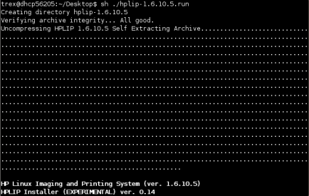
Select the install mode, automatic or custom install.
Note
In automatic mode parallel support is NOT enabled.
Note
In automatic mode the following settings are preset: Installs HPLIP, doesn't display the release notes, installs all options EXCEPT parallel support, doesn't ask to confirm linux distribution, tries to remove previous installs of HPLIP and HPOJ, assumes that all optional and required dependencies will be downloaded and installed, installs HPLIP to the /usr directory, will automatically compile and install hplip, and will run the hp-setup tool to configure your printer.
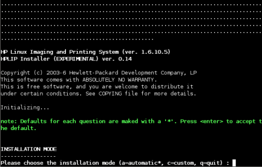
Verify or select your linux distribution:
Note
Ensure the installer detected the correct linux distribution. Different linux versions use different install procedures if the incorrect version is selected the installer may fail.
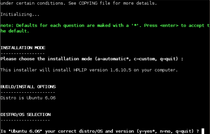
The pre-installation notes are displayed (below):
Warning
Be sure to read the Installation Notes: there is specific information or directions that need to be followed for your distribution.
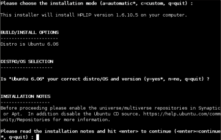
Next you will see the dependencies required for HPLIP to function that are missing:
Note
If you are installing in automatic mode all of the missing required and optional dependencies will be installed.
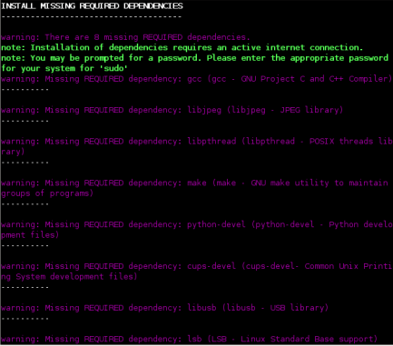
Your package manager, ie apt-get--will be updated and any other maintenance will be completed for your specific distribution.
Note
You may need to enter the root password.
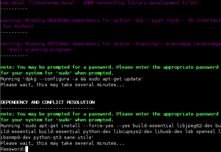
The installer will now download and install the missing dependencies:
Note
If the installer seems to pause for a long time hit enter or tab then enter enter several times. or if you get a blank line--enter your root password and hit enter. This is being looked into and should be fixed in a future release.
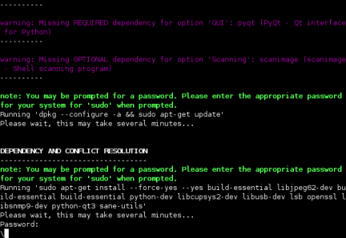
The installer checks to see if HPLIP is already installed and/or running. Then the installer compiles and installs the HPLIP software.
Note
You may need to enter your root password.
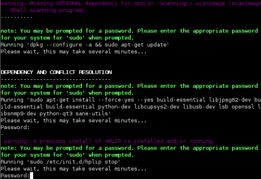
The installer will run the hp-setup tool so that you can configure your printer. The first step is to select the printer connection type:
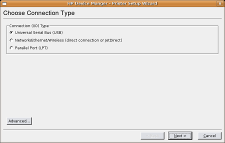
Next the setup tool will display printers detected (depending on the connection type selected):
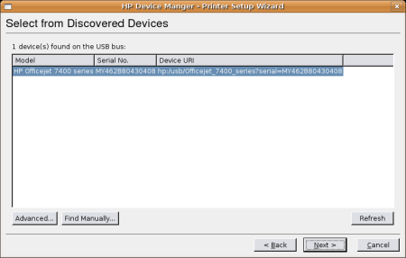
The PPD files (drivers) which are most similar to your printer are displayed. Select the appropriate PPD file for your printer:
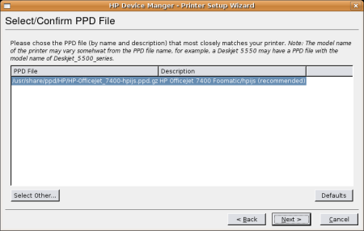
Enter your printer information:
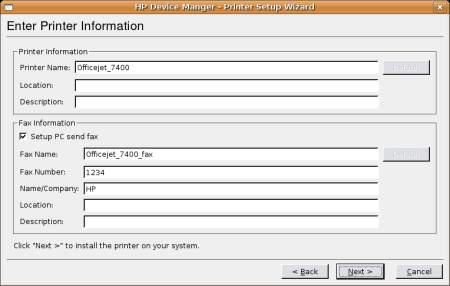
Click FINISH to complete the printer setup process:
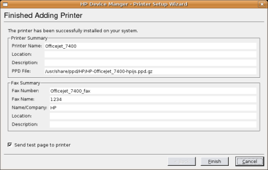